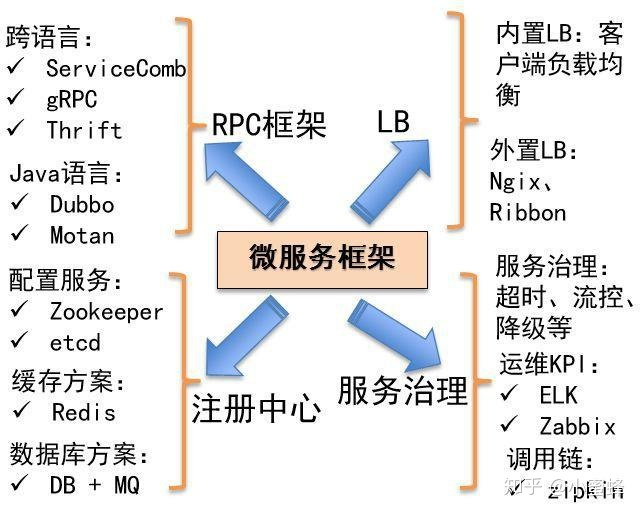
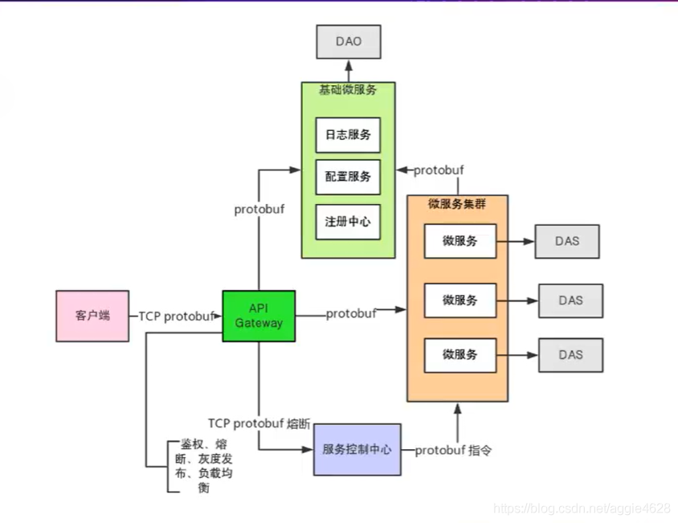
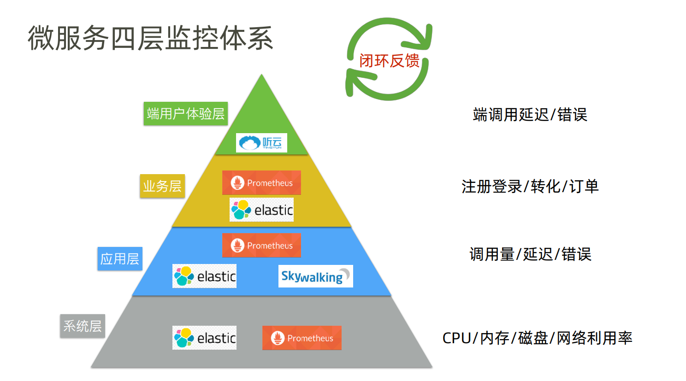
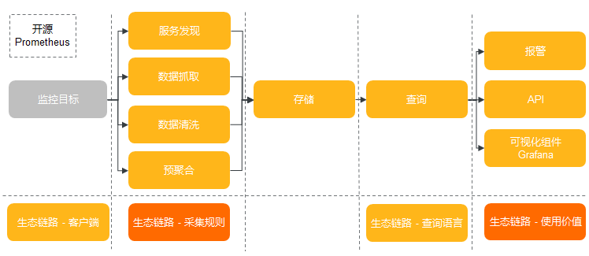

<!DOCTYPE HTML>
<html lang="zh-CN">
<head><meta name="generator" content="Hexo 3.8.0">
    <!--Setting-->
    <meta charset="UTF-8">
    <meta name="viewport" content="width=device-width, user-scalable=no, initial-scale=1.0, maximum-scale=1.0, minimum-scale=1.0">
    <meta http-equiv="X-UA-Compatible" content="IE=Edge,chrome=1">
    <meta http-equiv="Cache-Control" content="no-siteapp">
    <meta http-equiv="Cache-Control" content="no-transform">
    <meta name="renderer" content="webkit|ie-comp|ie-stand">
    <meta name="apple-mobile-web-app-capable" content="我的博客 - blog">
    <meta name="apple-mobile-web-app-status-bar-style" content="black">
    <meta name="format-detection" content="telephone=no,email=no,adress=no">
    <meta name="browsermode" content="application">
    <meta name="screen-orientation" content="portrait">
    <link rel="dns-prefetch" href="https://lives.xtcgch.ink">
    <!--SEO-->

<meta name="description" content="脑容量不够，笔记来凑">


<meta name="robots" content="all">
<meta name="google" content="all">
<meta name="googlebot" content="all">
<meta name="verify" content="all">
    <!--Title-->


<title>【架构】架构之微服务篇 | 我的博客 - blog</title>


    <link rel="alternate" href="/atom.xml" title="我的博客 - blog" type="application/atom+xml">


    <link rel="icon" href="https://blog.xtcgch.ink/img/background/海绵宝宝.ico">

    


<link rel="stylesheet" href="/css/bootstrap.min.css?rev=3.3.7">
<link rel="stylesheet" href="/css/font-awesome.min.css?rev=4.5.0">
<link rel="stylesheet" href="/css/style.css?rev=@@hash">


    


    

</head>

</html>
<!--[if lte IE 8]>
<style>
    html{ font-size: 1em }
</style>
<![endif]-->
<!--[if lte IE 9]>
<div style="ie">你使用的浏览器版本过低，为了你更好的阅读体验，请更新浏览器的版本或者使用其他现代浏览器，比如Chrome、Firefox、Safari等。</div>
<![endif]-->

<body>
    <header class="main-header" style="background-image:url(https://blog.xtcgch.ink/img/head-bg.jpg)">
    <div class="main-header-box">
        <a class="header-avatar" href="/" title="unistd68">
            
        </a>
        <div class="branding">
        	<!--<h2 class="text-hide">Snippet主题,从未如此简单有趣</h2>-->
            
                <h2> 脑容量不够，笔记来凑 </h2>
            
    	</div>
    </div>
</header>
    <nav class="main-navigation">
    <div class="container">
        <div class="row">
            <div class="col-sm-12">
                <div class="navbar-header"><span class="nav-toggle-button collapsed pull-right" data-toggle="collapse" data-target="#main-menu" id="mnav">
                    <span class="sr-only"></span>
                        <i class="fa fa-bars"></i>
                    </span>
                    <a class="navbar-brand" href="https://lives.xtcgch.ink">我的博客 - blog</a>
                </div>
                <div class="collapse navbar-collapse" id="main-menu">
                    <ul class="menu">
                        
                            <li role="presentation" class="text-center">
                                <a href="/"><i class="fa "></i>主页</a>
                            </li>
                        
                            <li role="presentation" class="text-center">
                                <a href="/categories/原理/"><i class="fa "></i>原理</a>
                            </li>
                        
                            <li role="presentation" class="text-center">
                                <a href="/categories/实战/"><i class="fa "></i>实战</a>
                            </li>
                        
                            <li role="presentation" class="text-center">
                                <a href="/categories/开源/"><i class="fa "></i>开源</a>
                            </li>
                        
                            <li role="presentation" class="text-center">
                                <a href="/categories/其他/"><i class="fa "></i>其他</a>
                            </li>
                        
                            <li role="presentation" class="text-center">
                                <a href="/archives/"><i class="fa "></i>时间轴</a>
                            </li>
                        
                    </ul>
                </div>
            </div>
        </div>
    </div>
</nav>
    <section class="content-wrap">
        <div class="container">
            <div class="row">
                <main class="col-md-8 main-content m-post">
                    <p id="process"></p>
<article class="post">
    <div class="post-head">
        <h1 id="【架构】架构之微服务篇">
            
	            【架构】架构之微服务篇
            
        </h1>
        <div class="post-meta">
    
    
    <span class="categories-meta fa-wrap">
        <i class="fa fa-folder-open-o"></i>
        <!-- <a href="https://blog.xtcgch.ink/categories/原理"> -->
        <a href="/categories/原理">
            原理
        </a>
    </span>
    

    
    <span class="fa-wrap">
        <i class="fa fa-tags"></i>
        <span class="tags-meta">
            
                
                    <!-- <a href="https://blog.xtcgch.ink/tags/微服务" title='微服务'> -->
                    <a href="/tags/微服务" title="微服务">
                        微服务
                    </a>
                
                    <!-- <a href="https://blog.xtcgch.ink/tags/架构" title='架构'> -->
                    <a href="/tags/架构" title="架构">
                        架构
                    </a>
                
            
        </span>
    </span>
    

    
        
        <span class="fa-wrap">
            <i class="fa fa-clock-o"></i>
            <span class="date-meta">2021/09/13</span>
        </span>
        
    
</div>

            
            
    </div>
    
    <div class="post-body post-content">
        <p><strong>摘要：</strong>这是摘要！</p>
<a id="more"></a>
<hr>
<h1 id="脑图"><a href="#脑图" class="headerlink" title="脑图"></a>脑图</h1><p></p>
<hr>
<h1 id="总体介绍"><a href="#总体介绍" class="headerlink" title="总体介绍"></a><table><tr><td bgcolor="#C7C7C7">总体介绍</td></tr></table></h1><p><strong>微服务框架</strong></p>
<p></p>
<p><strong>功能图</strong></p>
<p></p>
<p><strong>zookeeper</strong></p>
<h1 id="RPC框架"><a href="#RPC框架" class="headerlink" title="RPC框架"></a><table><tr><td bgcolor="#C7C7C7">RPC框架</td></tr></table></h1><h2 id="gRPC"><a href="#gRPC" class="headerlink" title="gRPC"></a><font color="#0000FF">gRPC</font></h2><h2 id="gRPC-1"><a href="#gRPC-1" class="headerlink" title="gRPC"></a><font color="#0000FF">gRPC</font></h2><h1 id="通信协议"><a href="#通信协议" class="headerlink" title="通信协议"></a><table><tr><td bgcolor="#C7C7C7">通信协议</td></tr></table></h1><h2 id="protubuf"><a href="#protubuf" class="headerlink" title="protubuf"></a><font color="#0000FF">protubuf</font></h2><h2 id="RabbitMQ"><a href="#RabbitMQ" class="headerlink" title="RabbitMQ"></a><font color="#0000FF">RabbitMQ</font></h2><h2 id="ZeroMQ"><a href="#ZeroMQ" class="headerlink" title="ZeroMQ"></a><font color="#0000FF">ZeroMQ</font></h2><h1 id="注册中心"><a href="#注册中心" class="headerlink" title="注册中心"></a><table><tr><td bgcolor="#C7C7C7">注册中心</td></tr></table></h1><h2 id="Zookeeper"><a href="#Zookeeper" class="headerlink" title="Zookeeper"></a><font color="#0000FF">Zookeeper</font></h2><h1 id="数据库方案"><a href="#数据库方案" class="headerlink" title="数据库方案"></a><table><tr><td bgcolor="#C7C7C7">数据库方案</td></tr></table></h1><h2 id="数据库之MYSQL"><a href="#数据库之MYSQL" class="headerlink" title="数据库之MYSQL"></a><font color="#0000FF">数据库之MYSQL</font></h2><h2 id="消息队列之RabbitMQ"><a href="#消息队列之RabbitMQ" class="headerlink" title="消息队列之RabbitMQ"></a><font color="#0000FF">消息队列之RabbitMQ</font></h2><h1 id="流量控制"><a href="#流量控制" class="headerlink" title="流量控制"></a><table><tr><td bgcolor="#C7C7C7">流量控制</td></tr></table></h1><h2 id="负载均衡LB之Nginx"><a href="#负载均衡LB之Nginx" class="headerlink" title="负载均衡LB之Nginx"></a><font color="#0000FF">负载均衡LB之Nginx</font></h2><h1 id="服务中心"><a href="#服务中心" class="headerlink" title="服务中心"></a><table><tr><td bgcolor="#C7C7C7">服务中心</td></tr></table></h1><h2 id="日志系统之log4j"><a href="#日志系统之log4j" class="headerlink" title="日志系统之log4j"></a><font color="#0000FF">日志系统之log4j</font></h2><h2 id="项目管理之git"><a href="#项目管理之git" class="headerlink" title="项目管理之git"></a><font color="#0000FF">项目管理之git</font></h2><h2 id="项目发布之jenkins"><a href="#项目发布之jenkins" class="headerlink" title="项目发布之jenkins"></a><font color="#0000FF">项目发布之jenkins</font></h2><h2 id="接口服务之Open-API"><a href="#接口服务之Open-API" class="headerlink" title="接口服务之Open API"></a><font color="#0000FF">接口服务之Open API</font></h2><h1 id="监控中心"><a href="#监控中心" class="headerlink" title="监控中心"></a><table><tr><td bgcolor="#C7C7C7">监控中心</td></tr></table></h1><p></p>
<h2 id="Prometheus"><a href="#Prometheus" class="headerlink" title="Prometheus "></a><font color="#0000FF">Prometheus </font></h2><p></p>
<p><strong>监控对象</strong></p>
<ol>
<li>系统层</li>
</ol>
<ul>
<li>CPU</li>
<li>磁盘</li>
<li>内存</li>
<li>网络利用率</li>
</ul>
<ol start="2">
<li>应用层</li>
</ol>
<ul>
<li>调用量</li>
<li>延迟</li>
<li>错误</li>
</ul>
<ol start="3">
<li>业务层</li>
</ol>
<ol start="4">
<li>端用户体验层</li>
</ol>
<p><strong>基础资源监控</strong></p>
<ol>
<li>网络监控</li>
</ol>
<ul>
<li>网络性能监控：主要涉及网络监测，网络实时流量监控（网络延迟、访问量、成功率）和历史数据统计、汇总和历史数据分析等功能</li>
<li>网络检测：主要针对内网或者外网的网络。如DDoS的。通过分析异常流量来确定网络行为</li>
<li>设备监控：主要针对数据中心内的多种网络设备进行监控。包括路由器，防火墙和交换机等硬件设备，可以通过snmp等协议收集数据</li>
</ul>
<ol start="2">
<li>存储监控</li>
</ol>
<ul>
<li>存储性能监控方面：存储通常监控块的读写速率，IOPS。读写延迟，磁盘用量等；文件存储通常监控文件系统inode。读写速度、目录权限等。</li>
<li>存储系统监控方面：不同的存储系统有不同的指标，例如，对于ceph存储需要监控OSD, MON的运行状态，各种状态pg的数量以及集群IOPS等信息。</li>
<li>存储设备监控方面：对于构建在x86服务器上的存储设备，设备监控通过每个存储节点上的采集器统一收集磁盘、SSD、网卡等设备信息；存储厂商以黑盒方式提供商业存储设备，通常自带监控功能，可监控设备的运行状态，性能和容量的。</li>
</ul>
<ol start="3">
<li>服务器监控</li>
</ol>
<ul>
<li>CPU：涉及整个 CPU 的使用量、用户态百分比、内核态百分比，每个 CPU 的使用量、等待队列长度、I/O 等待百分比、CPU 消耗最多的进程、上下文切换次数、缓存命中率等。</li>
<li>内存：涉及内存的使用量、剩余量、内存占用最高的进程、交换分区大小、缺页异常等。</li>
<li>网络 I/O：涉及每个网卡的上行流量、下行流量、网络延迟、丢包率等。</li>
<li>磁盘 I/O：涉及硬盘的读写速率、IOPS、磁盘用量、读写延迟等。</li>
</ul>
<ol start="4">
<li>中间件监控</li>
</ol>
<ul>
<li>消息中间件： RabbitMQ、Kafka</li>
<li>Web 服务中间件：Tomcat、Jetty</li>
<li>缓存中间件：Redis、Memcached</li>
<li>数据库中间件：MySQL、PostgreSQL</li>
</ul>
<ol start="5">
<li>应用程序监控(APM)</li>
</ol>
<p>APM主要是针对应用程序的监控，包括应用程序的运行状态监控，性能监控，日志监控及调用链跟踪等。</p>
<p>调用链跟踪是指追踪整个请求过程（从用户发送请求，通常指浏览器或者应用客户端）到后端API服务以及API服务和关联的中间件，或者其他组件之间的调用，构建出一个完整的调用拓扑结构，不仅如此，APM 还可以监控组件内部方法的调用层次（Controller–&gt;service–&gt;Dao）获取每个函数的执行耗时，从而为性能调优提供数据支撑。</p>
<p>应用程序监控工具除了有 Pinpoint，还有 Twitter 开源的 Zipkin，Apache SkyWalking，美团开源的 CAT等</p>
<p><strong>优点</strong></p>
<ul>
<li><p>强大的多维度数据模型：</p>
<ul>
<li>时间序列数据通过 metric 名和键值对来区分。</li>
<li>所有的 metrics 都可以设置任意的多维标签。</li>
<li>数据模型更随意，不需要刻意设置为以点分隔的字符串。</li>
<li>可以对数据模型进行聚合，切割和切片操作。</li>
<li>支持双精度浮点类型，标签可以设为全 unicode。</li>
<li>灵活而强大的查询语句（PromQL）：在同一个查询语句，可以对多个 metrics 进行乘法、加法、连接、取分数位等操作。</li>
</ul>
</li>
<li><p>易于管理： Prometheus server 是一个单独的二进制文件，可直接在本地工作，不依赖于分布式存储。</p>
</li>
<li>高效：平均每个采样点仅占 3.5 bytes，且一个 Prometheus server 可以处理数百万的 metrics。</li>
<li>使用 pull 模式采集时间序列数据，这样不仅有利于本机测试而且可以避免有问题的服务器推送坏的 metrics。</li>
<li>可以采用 push gateway 的方式把时间序列数据推送至 Prometheus server 端。</li>
<li>可以通过服务发现或者静态配置去获取监控的 targets。</li>
<li>有多种可视化图形界面。</li>
<li>易于伸缩。</li>
</ul>
<h2 id="log4j"><a href="#log4j" class="headerlink" title="log4j"></a><font color="#0000FF">log4j</font></h2>
    </div>
    
    <div class="post-footer">
        <div>
            
        </div>
        <div>
            
        </div>
    </div>
</article>

<div class="article-nav prev-next-wrap clearfix">
    
        <a href="/2021/09/27/求职之笔试篇/" class="pre-post btn btn-default" title="求职之笔试篇">
            <i class="fa fa-angle-left fa-fw"></i><span class="hidden-lg">上一篇</span>
            <span class="hidden-xs">求职之笔试篇</span>
        </a>
    
    
        <a href="/2021/09/13/开源之zeromq/" class="next-post btn btn-default" title="【开源】开源之zeromq">
            <span class="hidden-lg">下一篇</span>
            <span class="hidden-xs">【开源】开源之zeromq</span><i class="fa fa-angle-right fa-fw"></i>
        </a>
    
</div>


    <div id="comments">
        
    
    <div id="vcomments" class="valine"></div>
    <script src="//cdn1.lncld.net/static/js/3.0.4/av-min.js"></script>
<script src="/assets/valine.min.js"></script>

    <script>
        new Valine({
            av: AV,
            el: '#vcomments',
            appId: 'XWA5gq7VCJybw7YQhf5HG20r-gzGzoHsz',
            appKey: '8FW1WEwrysHXaUD1bhGn2Rp8',
            placeholder: '说点什么吧',
            notify: true,
            verify: false,
            avatar: 'https://blog.xtcgch.ink/img/comment-avatar.jpg',
            meta: 'nick,mail'.split(','),
            pageSize: '10',
            path: window.location.pathname,
            lang: 'zh-CN'.toLowerCase()
        })
    </script>


    </div>


                </main>
                
                    <aside id="article-toc" role="navigation" class="col-md-4">
    <div class="widget">
        <h3 class="title">文章目录</h3>
        
            <ol class="toc"><li class="toc-item toc-level-1"><a class="toc-link" href="#脑图"><span class="toc-text">脑图</span></a></li><li class="toc-item toc-level-1"><a class="toc-link" href="#总体介绍"><span class="toc-text">总体介绍</span></a></li><li class="toc-item toc-level-1"><a class="toc-link" href="#RPC框架"><span class="toc-text">RPC框架</span></a><ol class="toc-child"><li class="toc-item toc-level-2"><a class="toc-link" href="#gRPC"><span class="toc-text">gRPC</span></a></li><li class="toc-item toc-level-2"><a class="toc-link" href="#gRPC-1"><span class="toc-text">gRPC</span></a></li></ol></li><li class="toc-item toc-level-1"><a class="toc-link" href="#通信协议"><span class="toc-text">通信协议</span></a><ol class="toc-child"><li class="toc-item toc-level-2"><a class="toc-link" href="#protubuf"><span class="toc-text">protubuf</span></a></li><li class="toc-item toc-level-2"><a class="toc-link" href="#RabbitMQ"><span class="toc-text">RabbitMQ</span></a></li><li class="toc-item toc-level-2"><a class="toc-link" href="#ZeroMQ"><span class="toc-text">ZeroMQ</span></a></li></ol></li><li class="toc-item toc-level-1"><a class="toc-link" href="#注册中心"><span class="toc-text">注册中心</span></a><ol class="toc-child"><li class="toc-item toc-level-2"><a class="toc-link" href="#Zookeeper"><span class="toc-text">Zookeeper</span></a></li></ol></li><li class="toc-item toc-level-1"><a class="toc-link" href="#数据库方案"><span class="toc-text">数据库方案</span></a><ol class="toc-child"><li class="toc-item toc-level-2"><a class="toc-link" href="#数据库之MYSQL"><span class="toc-text">数据库之MYSQL</span></a></li><li class="toc-item toc-level-2"><a class="toc-link" href="#消息队列之RabbitMQ"><span class="toc-text">消息队列之RabbitMQ</span></a></li></ol></li><li class="toc-item toc-level-1"><a class="toc-link" href="#流量控制"><span class="toc-text">流量控制</span></a><ol class="toc-child"><li class="toc-item toc-level-2"><a class="toc-link" href="#负载均衡LB之Nginx"><span class="toc-text">负载均衡LB之Nginx</span></a></li></ol></li><li class="toc-item toc-level-1"><a class="toc-link" href="#服务中心"><span class="toc-text">服务中心</span></a><ol class="toc-child"><li class="toc-item toc-level-2"><a class="toc-link" href="#日志系统之log4j"><span class="toc-text">日志系统之log4j</span></a></li><li class="toc-item toc-level-2"><a class="toc-link" href="#项目管理之git"><span class="toc-text">项目管理之git</span></a></li><li class="toc-item toc-level-2"><a class="toc-link" href="#项目发布之jenkins"><span class="toc-text">项目发布之jenkins</span></a></li><li class="toc-item toc-level-2"><a class="toc-link" href="#接口服务之Open-API"><span class="toc-text">接口服务之Open API</span></a></li></ol></li><li class="toc-item toc-level-1"><a class="toc-link" href="#监控中心"><span class="toc-text">监控中心</span></a><ol class="toc-child"><li class="toc-item toc-level-2"><a class="toc-link" href="#Prometheus"><span class="toc-text">Prometheus </span></a></li><li class="toc-item toc-level-2"><a class="toc-link" href="#log4j"><span class="toc-text">log4j</span></a></li></ol></li></ol>
        
    </div>
</aside>

                
            </div>
        </div>
    </section>
    <footer class="main-footer">
    <div class="container">
        <div class="row">
        </div>
    </div>
</footer>

<a id="back-to-top" class="icon-btn hide">
	<i class="fa fa-chevron-up"></i>
</a>


    <div class="copyright">
    <div class="container">
        <div class="row">
            <div class="col-sm-12">
                <div class="busuanzi">
    
</div>

            </div>
            <div class="col-sm-12">
                <span>Copyright &copy; 2018
                </span> |
                <span>
                    Powered by <a href="//hexo.io" class="copyright-links" target="_blank" rel="nofollow">Hexo</a>
                </span> |
                <span>
                    Theme by <a href="//github.com/shenliyang/hexo-theme-snippet.git" class="copyright-links" target="_blank" rel="nofollow">Snippet</a>
                </span>
            </div>
        </div>
    </div>
</div>


<script src="/js/app.js?rev=@@hash"></script>

</body>
</html>